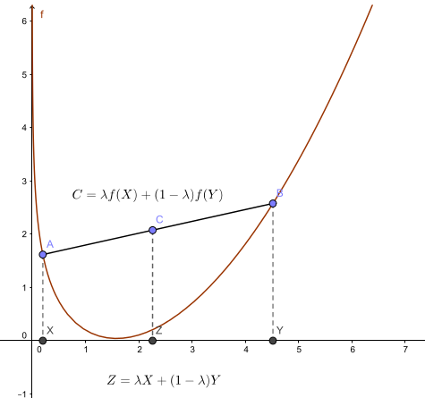

Visualizaciones de Optimización
En esta página encontrarás un acercamiento visual a la disciplina de la Optimización. Esta disciplina ha demostrado ser una herramienta imprescindible para tomar decisiones en cualquier sistema complejo que se pueda modelar matemáticamente. Los temas tratados aquí son, entre otros, algunos conceptos básicos (como convexidad, poliedro, etc.), programación lineal (en particular, el algoritmo Simplex), optimización no lineal y flujo en redes.